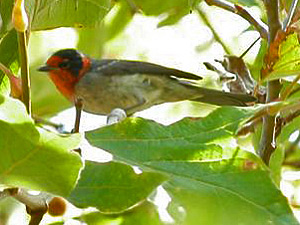

| These photographs accompany records that have been recently submitted to the committee. This record
has been ACCEPTED.  Red-faced Warbler Cardellina rubrifrons 14 September 2005, Costa Mesa, ORA 2005-116 © 2005 Peyton Cook Back to CBRC Rare Bird Photos |